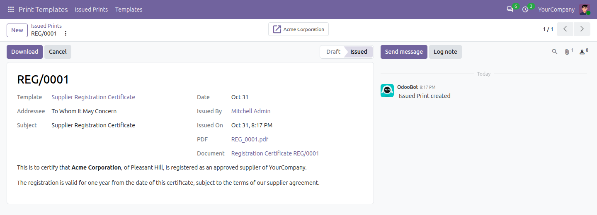
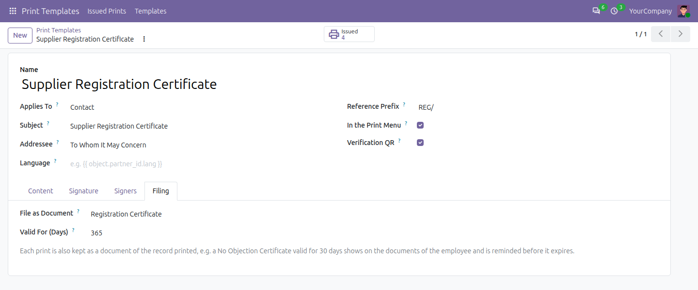

File the prints of a template as documents of the record printed, with their PDF and an expiry date, e.g. a No Objection Certificate valid for 30 days that shows on the documents of the employee and is reminded before it expires.
A bridge: it installs by itself once Print Templates and Document Expiry are both installed.

The issued print links to the document it filed.
The prints of Print Templates, kept and reminded by Document Expiry.
Open a template in Print Templates, Templates, go to the Filing tab and choose the document type and the validity in days.

Print Templates: Documents depends on Print Templates (om_print_template) and Document Expiry (om_document), and installs by itself once both are installed.